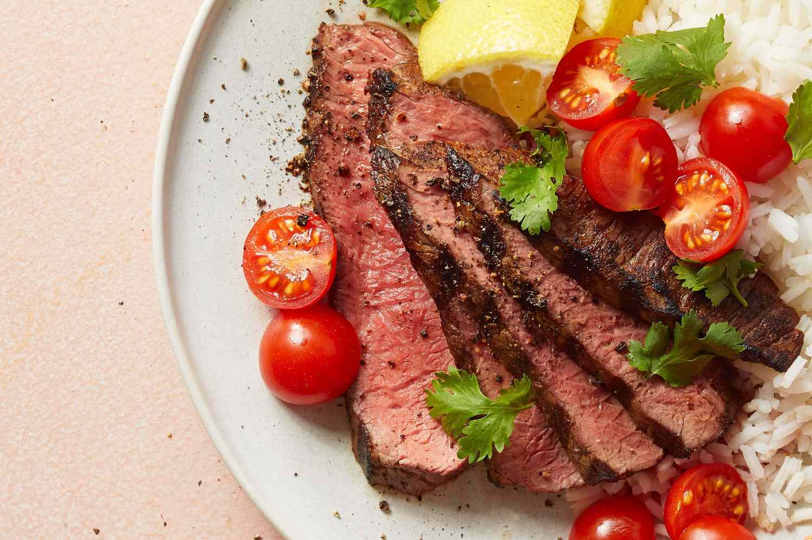

Churrascaria-Style Picanha

Description
Picanha is a prized Brazilian beef cut from the top sirloin cap, known
for its tenderness and rich flavor. Its thick fat cap bastes the meat as
it cooks, keeping it juicy and flavorful. Typically seasoned with coarse
salt and grilled, it's a standout at traditional churrascos.
Ingredients
- 3 cloves garlic cloves, crushed, or more to taste
- 1 teaspoon kosher salt, or more to taste
- 1 pound beef top sirloin, trimmed of excess fat
- ¼ cup lemon juice
- 1 tablespoon olive oil, or as needed
Steps
-
Mix crushed garlic and salt together in a bowl until
combined into a paste.
-
Rub garlic paste onto meat until covered. Place into a bowl;
cover with lemon juice. Marinate until the meat has absorbed desired
flavor, 30 minutes to 4 hours. Remove meat from the lemon juice.
Baste with olive oil.
-
Preheat an outdoor grill for high heat and lightly oil the grate.
-
Cook meat on the preheated grill, turning frequently until the outer
edges are charred and center is uncooked, about 5 minutes. Remove
from heat; slice off charred edges, cutting against the grain.
Return the uncooked center portion of the meat back to the grill.
Cook until the meat begins to firm and is hot and slightly pink in
the center, about 5 minutes per side. An instant-read thermometer
inserted into the center should read 140 degrees F (60 degrees C).